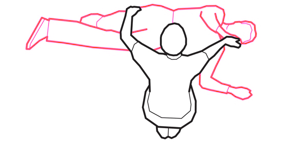
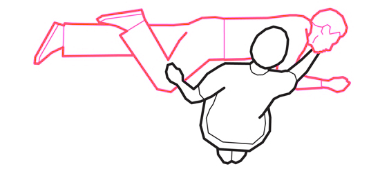
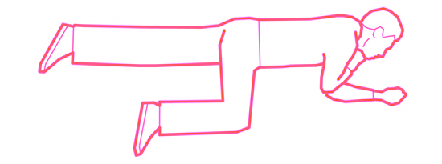

Honest information about drugs
Need help right now?
If someone's in danger, call 999. Tell them everything you know about what was taken — it could save their life.
What to do in an emergencyIf someone's in danger, call 999. Tell them everything you know about what was taken — it could save their life.
What to do in an emergencyAlso called: Ket, K, Special K, Wonk, Vitamin K
A powerful anaesthetic used in human and animal medicine. Looks similar to cocaine, but is a very different drug.
Mixing is always risky, but some combinations are far more dangerous than others. With ketamine, these can slow or stop your breathing:
Ketamine is a dissociative drug — it produces a feeling of detachment from your body and the world around you. It can make people seem slower, more relaxed and chilled out, but it can also stop them moving properly or making sense.
How long the effects last depends on how much you've taken, your size, and what else you've taken. People may feel low in mood for a few days afterwards.
Ketamine is usually sold as a grainy white or light brown powder. It tastes bitter and unpleasant.
Most people who use powder ketamine snort it — taking a small amount is often called "a bump". Snorting is the most common way to take it in the UK. People who use it regularly sometimes inject it into a muscle for a bigger hit.
Yes. People who become addicted will keep taking it whether or not they're aware of the health risks. Regular use builds tolerance, which can lead to taking more to get the same effect.
There are no physical withdrawal symptoms, so ketamine addiction is sometimes called a psychological dependence. Drug treatment services can help people stop.
Ketamine is a Class B drug. That means it's illegal to have for yourself, give away or sell.
Don't leave them alone, even for a moment
The 999 operator will talk you through it
Speak softly, don't shout or shake them
Follow the instructions on the kit and tell the crew you've given it
Lie them on their side so they can breathe
Give them to the ambulance crew — it helps treatment
Opioids include heroin, methadone, some prescription painkillers and nitazenes. Signs of an overdose:
Call 999. If you have naloxone, use it now — it reverses an opioid overdose. If they aren't breathing, start CPR.
Use this if someone is unconscious but breathing.
Tilt their head back and lift their chin to open the airway
Lie them on their side with their legs straight
Place their nearest arm at right angles to their body
Pull the far leg up and roll them towards you
Keep their head tilted back so the airway stays open



It's normal to feel shaky, anxious or drained after helping someone. Here's what to expect:
We're working to fix this. Please try again later.
If someone has taken drugs and needs medical help, call 999 for an ambulance. Tell them what was taken — it could save a life.
Call 999Our helpline and text service are available while the website is down.
FRANK is the national drugs information and advice service. We provide honest information about drugs, their effects and the law — plus confidential support if you're worried about yourself or someone else.